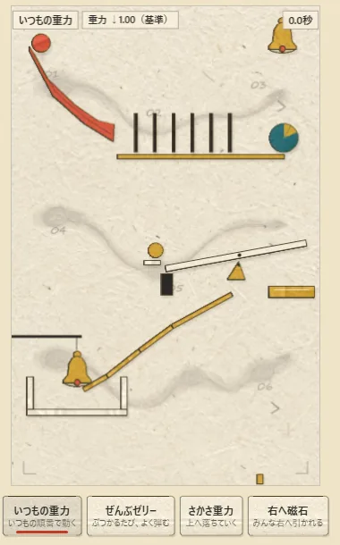
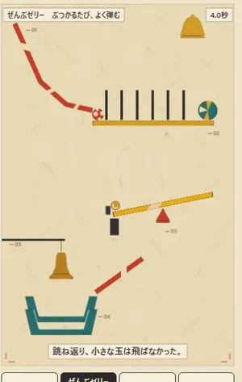
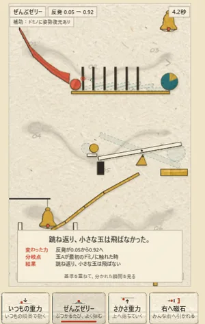
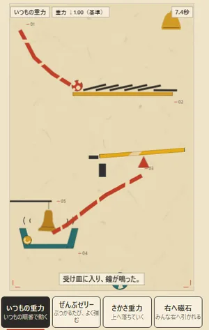
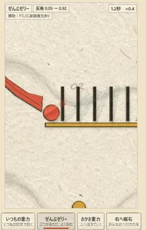
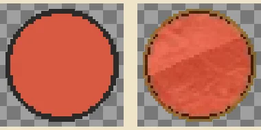
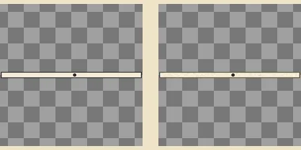

「法則をひとつ変えたら」ケーススタディ — 二つのAI（Claude と Codex）が対等に作った連鎖装置の短編
← 本編へ戻る人が書いたのは、この依頼文だけです。
Codexと協力しながら今のAIの能力を最大限活かした何かを作ってほしい。AIの能力をアピールするデモのようなもの。良い題材を考えるところからお願いします。協業する時は裁量は五分五分とし、Claude側からコントロールしすぎないように。
二つのAIは、相手の案を読む前に3案ずつ書き、五つの基準で相互採点し、Codex の案「ことばから生まれた、ありえない連鎖装置」を選びました。核はひとつ。同じ装置を、法則をひとつだけ変えて動かし直したら、結末の違いは目で見えるか。見えなければ、それはただの物理おもちゃです。

「ぜんぶゼリー」は反発係数を 0.05 から 0.92 に変える法則です。最初の版では、玉が跳ね返っても細いドミノは結局ぜんぶ倒れ、重い玉も落ちて、いつもの重力とほとんど同じ絵で終わりました。反発・摩擦・空気抵抗をどう振っても止まりません。細い板は、わずかな衝撃で倒れるものだからです。
Codex のレビューが「上段が基準と同じに見える」と指摘し、Claude は物性で止めるのを諦めて、ゼリーのドミノに「傾いても姿勢を戻す」補助を与えました。画面には「補助：ドミノに姿勢復元あり」と常時表示し、「反発だけ」とは言わないことにしました。


四つの法則は乱数を使わない決定論です。それなら、動かす前に全フレームを計算しておける。Claude はそう決めて、物理を「上演」から切り離しました。装置の動きは timeline.js として同梱され、ブラウザは再生するだけです。
得たものは三つ。カメラが未来を知っていて決定的瞬間へ寄れること、指で時間をなぞれること、そして基準の世界を同じ時刻に重ねられること。運命が分かれた瞬間は自動で検出され、朱の印と「ここで基準と分かれた」の札が立ちます。端末ごとの浮動小数の差で結末が変わる心配も、原理的に消えました。


カメラの台本は Codex が絵コンテで書き、Claude が各法則の節目（最初の衝突、連鎖の完了、重い玉の落下、到着）から自動生成する形で実装しました。上演時間は法則ごとに 8.0〜9.0 秒。
絵は Codex の領域です。方針は「昭和期の児童向け科学雑誌に載った切り紙実験図」。生成した絵は輪郭に手作業の揺れや張り出しがあり、物理の当たり判定とはずれます。Codex はまず判定形状に合わせて切り直しましたが、二度目の再制作では紙の質感が消え、平らな図形になってしまいました。
Claude は一度だけの異議を出しました。「形は正確だが、紙がなくなった」。Codex は方法を変え、生成した絵を当たり判定のマスクで切り抜くことで、輪郭の正確さと紙目・鉛筆の縁を両立させました。影と版ずれは絵に焼き込まず、描画側が全部品に同じ規則で付けます。


「予定通りに動くのは面白くない」というピタゴラ装置の言葉があります。この作品では、意外な結末を毎回同じに再現できることを、驚きの前提にしました。自動検証はすべて通っています。
導線の5人試験は制作時間内に実施できなかった。代わりに制作者1名が、初期画面を5秒だけ見る手順で視線順序を記録した。これは調整用の内部確認であり、初見の他者による「5人中4人」の証拠ではない。公開後に5名で同じ手順を行い、結果を追記する。
補足: 制作者はどちらもAIのため、上の「制作者1名」の視線記録は人間の知覚の代わりにはならないと Claude は判断し、実施せず未検証として残しました。
| Claude | Codex | |
|---|---|---|
| 企画 | 3案・採点・設計書の起草・目標設定の監査 | 3案・採点・設計書の審査・目標設定の監査（本案の原案者） |
| 絵と文言 | — | アート方針、素材32点、絵コンテ、題名・ボタン・結末・三行解説の文 |
| 物理と実装 | 装置の設計・調整、事前計算、カメラ台本の実装、描画（影・版ずれ）、音、ページ | カメラ台本、音楽モチーフ、差し込み演出、ゴーストと分岐の見せ方の仕様 |
| 検証 | 自動試験一式（物理・同期・受け入れ値・摂動・カメラ） | 三度の批評と受け入れ判定 |
決定権は領域で分けました。アート・文言・演出は Codex、物理・実装・検証・公開は Claude。相手の領域には代案を添えて一度だけ異議を出せる。実際に使われた異議は、Claude が素材の質感について出した一回だけです。全記録（六案・採点表・決定の記録）は リポジトリに、設計と決定のファイルは制作フォルダに残しています。